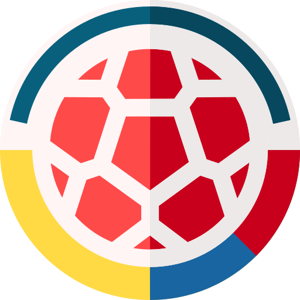

futbol
10/11/21
En en el fútbol de hoy en día cada día se ve menos pasión de los jugadores sólo se ve en muy pocos, y esto realmente es preocupante ya que cada día juegan peor, también los grandes equipos cada día intenta hacer lo mejor de lo mejor y es bueno pero no se fijan en la importancia de sus jugadores y también en sus necesidades, tenemos que apoyar más a los jugadores

El fútbol se define en primer lugar como un juego que incluye dos contrincantes y un árbitro con la capacidad de imponer justicia imparcial. Cada contrincante está compuesto por un equipo de 11 jugadores en campo de juego cada uno, con la opción de incluir jugadores suplentes en el transcurso del partido de fútbol. El objetivo es hacer rodar un balón esférico con el fin de anotar un punto, cuya anotación es válida al cruzar la línea límite del arco contrario. Cada punto logrado es conocido como gol, por lo tanto el equipo que más goles sume en el transcurso de 90 minutos –tiempo neto de un partido- será el ganador.
Fútbol - Concepto, reglas, campo de juego y fútbol de sala. (2013). Retrieved February 18, 2022, from Concepto website: https://concepto.de/futbol/
 mejores futbolistas
mejores futbolistas investigacion semana 5
investigacion semana 5

 video explicando
video explicando
 investigacion
investigacion


 investigacion semana 8
investigacion semana 8


 investigacion semana 9
investigacion semana 9